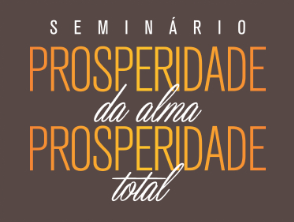

 IGREJA EVANGÉLICA LIBERTANDO VIDAS
IGREJA EVANGÉLICA LIBERTANDO VIDAS
Av. Luiz Tarquinio, 941, próximo a UNIME Lauro de Freitas-BA
Abrir Mapa 20 A 22 DE SETEMBRO
20 A 22 DE SETEMBRO
SEXTA . 19H30SÁBADO . 16H . 19HDOMINGO . 9H
 INVESTIMENTO
INVESTIMENTO
R$ 30,00
INSCRIÇÕES:Sheyla (71) 99664-9154